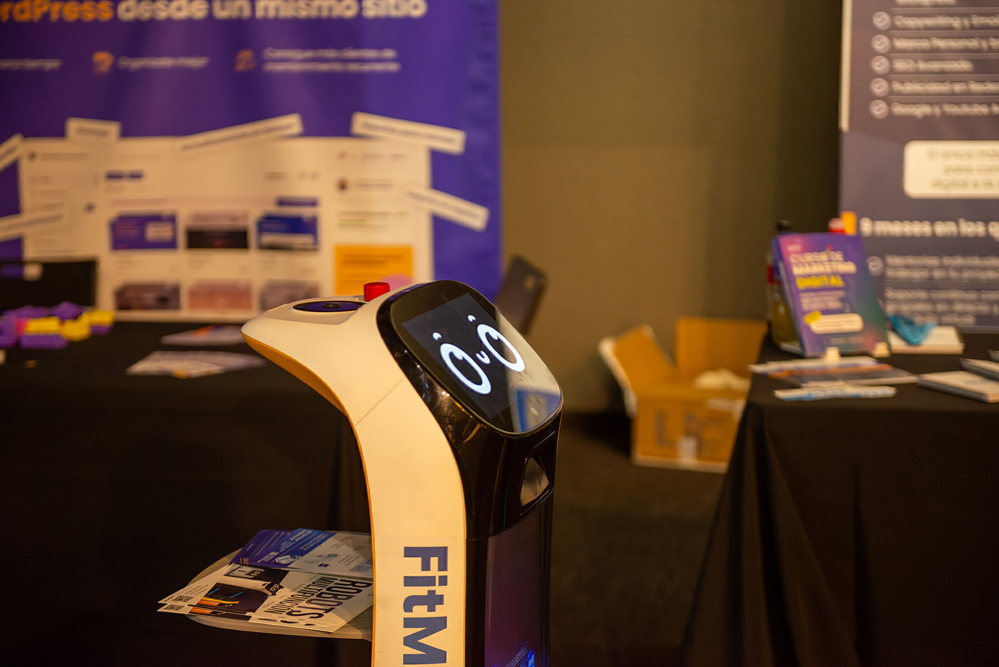
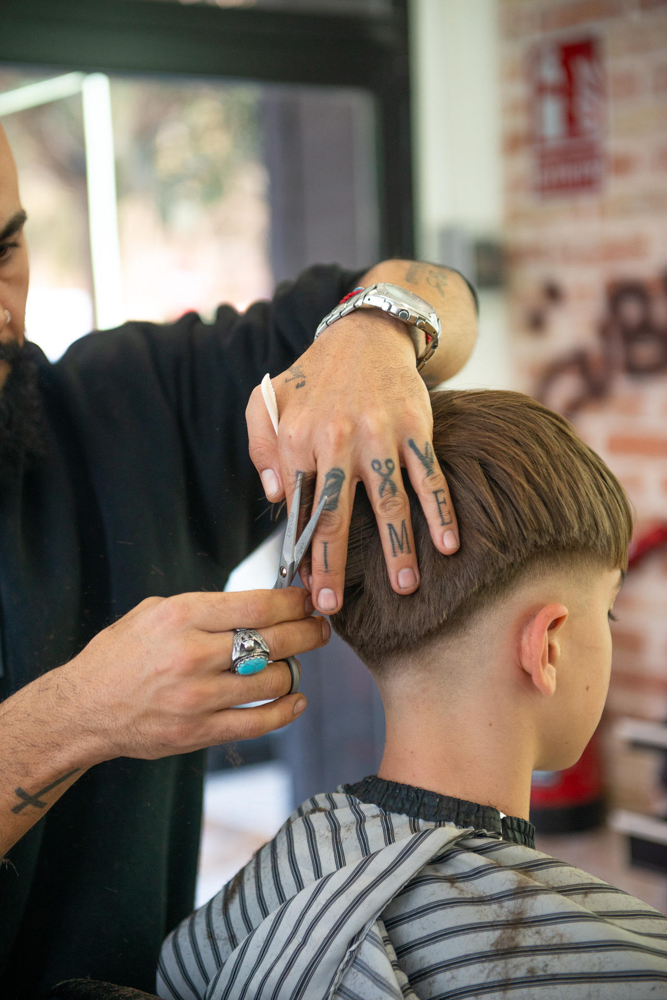

Servicios Profesionales
Capturando la excelencia en cada disciplina. Fotografía creativa y profesional en Valencia.
Fotógrafo Deportivo Valencia
Especializado en capturar la adrenalina y la intensidad del deporte. Desde la rapidez en la pista de tenis hasta la emoción de cualquier disciplina deportiva.
Mi enfoque en la fotografía deportiva en Valencia combina técnica de precisión con la capacidad de anticipar el momento perfecto, garantizando imágenes impactantes que transmiten el esfuerzo y la victoria en cada partido.
Ver Trabajos
Fotografía Creativa en Valencia
Cada evento tiene una historia única. Ofrezco una fotografía creativa en Valencia para eventos sociales, corporativos y lifestyle, buscando siempre la naturalidad y la esencia del momento.
Ya sea un lanzamiento de marca o una celebración privada, mi objetivo como Javifoto es documentar cada detalle con una estética cuidada y profesional.
Explorar GaleríaRetrato Profesional Valencia
Sesiones de retrato personalizadas para modelos, profesionales y marcas. En Javiphoto, nos enfocamos en resaltar tu mejor versión a través de una iluminación experta y una dirección artística de primer nivel.
Si buscas fotografía profesional en Valencia que destaque en redes sociales o portafolios corporativos, estás en el lugar adecuado. Javier Fernández Ramos (@javier.fzr) aporta su visión única a cada retrato.
Ver Retratos
Fotografía de Marca y Negocios
Ayudo a empresas y emprendedores a comunicar su valor a través de imágenes potentes. Desde fotografía de marca en Valencia hasta retratos corporativos y contenido para redes sociales.
La fotografía de negocios en Valencia es clave para diferenciarte. Capturo la esencia de tu espacio de trabajo, tu equipo y tus productos con un estilo limpio y profesional que genera confianza en tus clientes.
Ver Branding